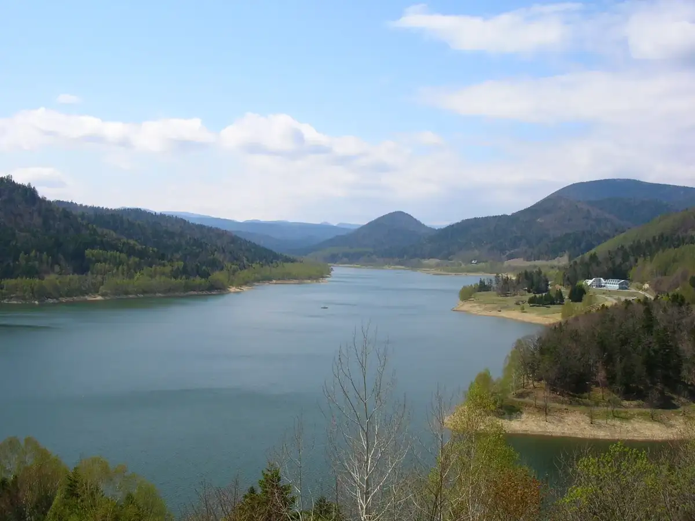
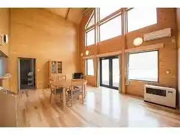
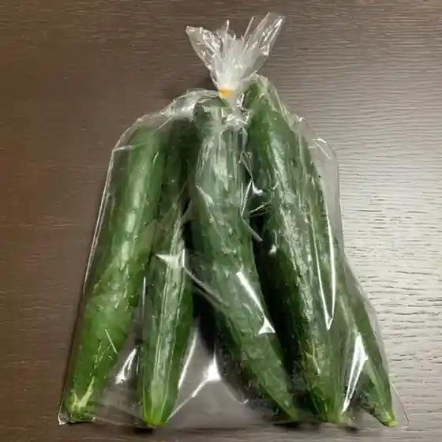
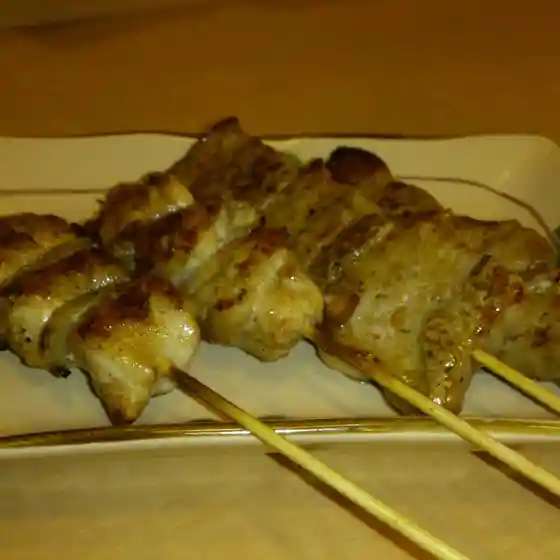
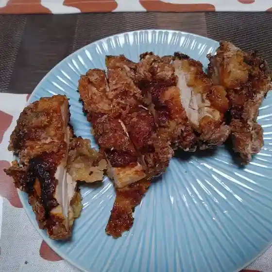
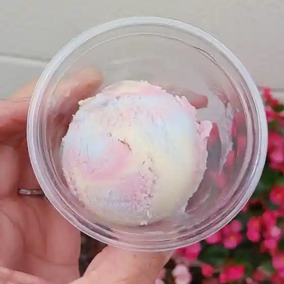
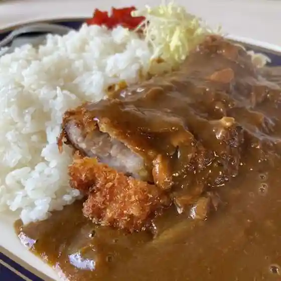
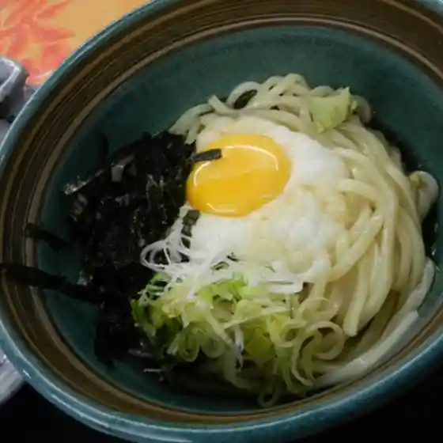
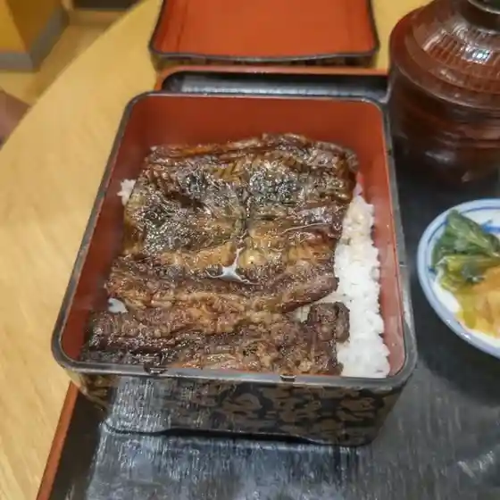
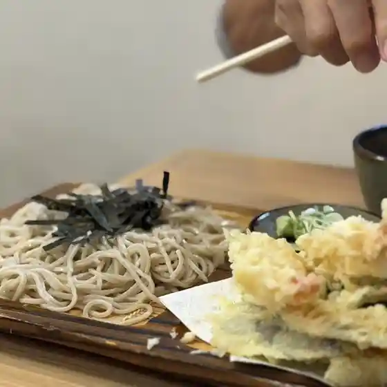

Oketo
Oketo · Hokkaido
Oketo
Highlighted on the Hokkaido map.

Stay
おけと勝山温泉ゆぅゆ

Oketo Katsuyama Onsen Yuuyu
Dining
ほっと

Hotto
石太郎

Ishitarou
A・COOP おけと店

A Coop Oketo Mise
カフェ ラーソ

Kafe Raaso
途の駅ほっこう

To No Eki Hokkou
レストラン虹の滝

Resutoran Niji No Taki
おけと勝山温泉ゆうゆ

Oketo Katsuyama Onsen Yuuyu
そば処 いなだ屋 置戸本店

Soba Tokoro Inada Ya Oketo Honten
佐々木菓子舗
Sasaki Kashi Ho
一福
Ichi Fuku
キッチン 木の実
Kitchin Konomi
寿光苑
Toshimitsu En
ミルク工房 ミルリッチ
Miruku Koubou Miruritchi